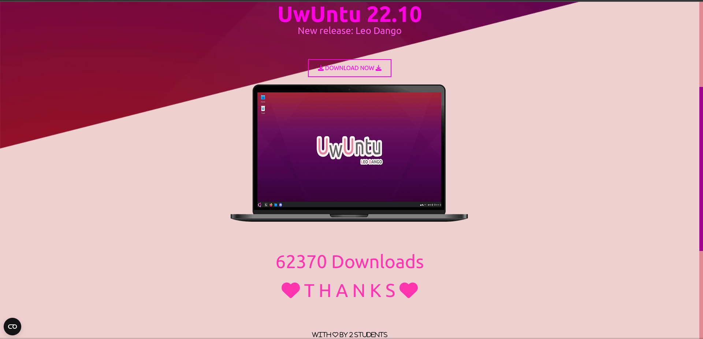
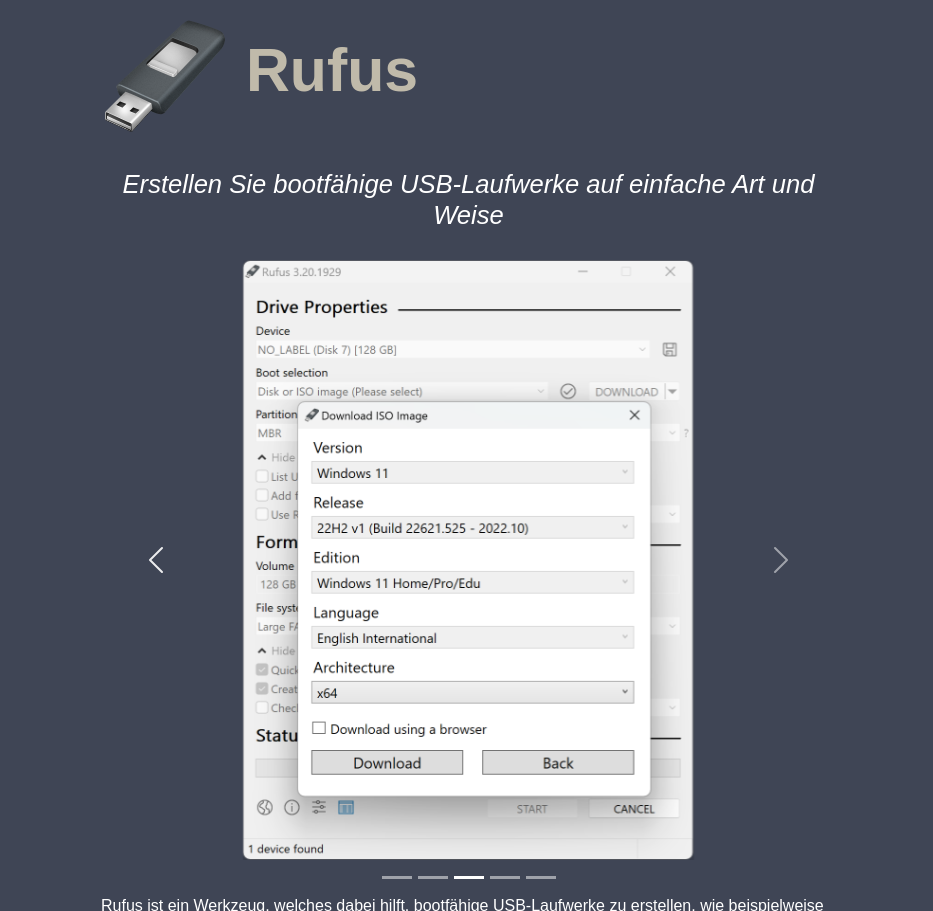
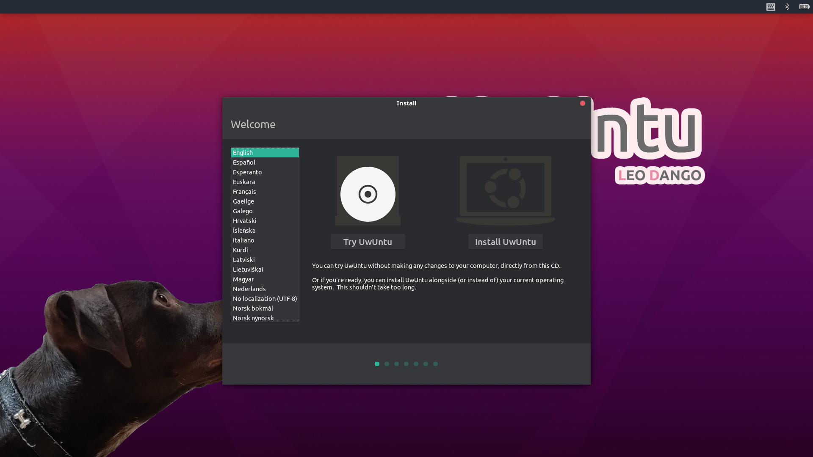

Warum habe ich das getan? Ich habe ein TREKSTOR Primebook C11, das nicht mehr den minimalen Anforderungen entspricht. Somit hatte es dauerhaft einen Bluescreen und war unbrauchbar. Anstatt es wegzuwerfen, dachte ich mir, warum versuche ich nicht, es zu retten? Da ich bereits Erfahrungen mit Linux habe, es kostenlos ist und viele Distributionen leichtgewichtig sind, entschied ich mich schnell für Linux.
Natürlich war die Frage offen, welche Distribution (Distro) ich wähle, da es Tausende gibt. Ich scrollte durch TikTok und fand das Perfekte für mich: UWUntu↓.

Es basiert auf Ubuntu Linux und hatte alle Apps vorinstalliert, die ich brauchte. Also lud ich mir die ISO-Datei über die offizielle UWUntu-Seite herunter und verwendete das Tool Rufus↓.

Um einen bootbaren USB-Stick zu erhalten, steckte ich den USB-Stick an und öffnete Rufus. Sofort konnte ich die ISO-Datei auswählen und den USB-Stick auch. Nur noch auf "Starten" klicken und warten. Achtung!!! alle Datein Werden gelöscht!!! Falls es bei euch nicht funktioniert, müsst ihr den Explorer schließen und/oder beim Windows Defender Rufus zulassen.
Ist es fertig? Super! Jetzt den PC neustarten und ins BIOS gehen. Falls du nicht weißt, welche Taste du nutzen sollst, versuche es mit einer der folgenden: 'Entf', 'F12' oder 'Esc'. Gehe zu "Booten" und ändere deine Boot-Reihenfolge so, dass dieser USB-Stick ganz oben ist. Nun solltest du im Installer sein↓.

Hier kannst du die Distro erst mal ausprobieren, ohne sie dauerhaft zu installieren. Doch ich habe UWUntu sofort installiert. Nach etwas Warten hatte ich einen neuen Laptop, und er läuft seitdem flüssig.